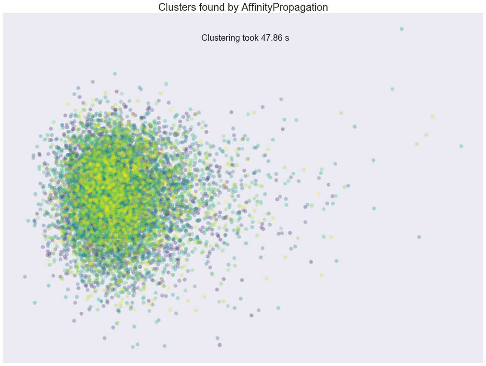

Motivation
Clustering: the example #1 (and most probably the only one) a machine learning expert will give you if you ask "What are examples of unsupervised learning?".
Clustering is also a closet of shame of machine learning as a scientific domain. Nobody really knows what a good clustering is. There's no algorithmic way to optimally decide on the good initialization of clustering algorithms, the optimal number of clusters, the metric to compare the similarity/dissimilarity of points within one cluster. Only heuristics and advice of kind "try this/try that".
Classification/regression/sequence modeling/reinforcement learning are all living a boom of new discoveries and new problems being solved. Clustering desperately got stick in the 80s..
source: Andriy Burkov on Linkedin In this article, we suggest TensorBoard interactive visualization as an additional tool to help visualize higher dimensional data and understand unsupervised models and results
Introduction
With data increasing at an exponential rate, the datasets have million observations and attributes/features. One might argue, more the data the merrier. But this is not the case always. Datasets with high dimensions/features are subjected to what is called as curse of dimensionality Medical images generate thousands of features and are subjected to curse of dimensionality. This problem pushed researchers to explore dimensionality reduction procedures such as Principal Component Analysis (PCA), t-distributed stochastic neighbor embedding (t-SNE), Linear discriminant analysis (LDA) etc. In this article, we will concentrate on t-SNE.
The math behind some of these dimensionality reduction is elaborately explained in this article and more intuitively in this video.
t-distributed stochastic neighbor embedding (t-SNE)

Now that we established some understanding of visualizing higher dimensional data. Let's understand how one could leverage this to understand unsupervised model performance.
. .. .
Project Description
Multi-source, heterogeneous and multifaceted data for 11,000 participants were acquired for a large scale study. Imaging, genetics, clinical assessments and demographic information was recorded at multiple times. The data was preprocessed, derived neuroimaging morphometry measures were computed, and a single computable data object was created by harmonizing and aggregating all the available information. The final sample size was reduced to 9,914, as some cases were removed due to preprocessing errors, extreme missingness, or inconsistencies.The goal of the study was to examine thousands of data elements (3,300), predict specific clinical outcomes, determine the most salient features associated with computable clinical phenotypes, and interpret the joint data holistically, in a lower dimensional space
Pipeline
Feature Extraction
Description: Get information from Hanbo Sun
Data after feature extraction
Number of Observations: 9,914
Number of features: 3,297
Machine Learning
After all the data pre-processing and feature extraction, it's time to find hidden patterns in the data. Since we do not have ground truth labels, unsupervised learning techinques are used. We would not go in depth on these machine learning models in this article.
Before training an unsupervised model, we need to note that data has 3,297 features which can results in poor performance of our model. So the first step employed is dimensionality reduction using PCA to get a minimum number of features which can explain 80% of the variance. As seen in the graph below, approx. 300 features can help explain 80% variance in the data. Hence, our final data that is fed into machine learning model has 9,914 Observations and 300 Feaatures/attributes.
Machine Learning algorithms
Model Performance To evaluate model performance in absence of information about ground truth labels, very few metrics are available to evaluate the model. These metrics are:
- Silhouette Coefficient
- Calinski-Harabaz Index
Interpretation: The silhouette value is a measure of how similar an object is to its own cluster (cohesion) compared to other clusters (separation).The score is bounded between -1 for incorrect clustering and +1 for highly dense clustering. Scores around zero indicate overlapping clusters. The score is higher when clusters are dense and well separated, which relates to a standard concept of a cluster.
Interpretation: The score is higher when clusters are dense and well separated, which relates to a standard concept of a cluster. The score is fast to compute
Note: Since the focus of the article is on understanding the results of unsupervised learning using TensorBoard visualizations, we would not do much in terms of hyperparameter tuning of machine learning models abeit K-Means++
- K- Means++
- Affinity Propogation
- Spectral Clustering
- Agglomerative Clustering
- Agglomerative Clustering
- HDBSCAN
The parameter of interest in this model is choosing optimal 'K' i.e., Number of CLusters. Elbow graph as shown below is the popular method to estimate the value of 'K'
We are looking for a sharp bend in the plot of inertia vs. number of clusters where beyond that point change in inertia is very less and that point of the bend can be considered as optimal cluster number. In this case, we do not see such sharp bend. However, we see that after 3 clusters the variation in inertia is less/decreasing gradually. Thus, we will fit our data to 3 clusters.
Result of K-Means++ model
As seen from the above label distribution plot, 85% of the observations are in clusters 1 and 3 with Silhouette Coefficient of 0.0907435709364 . Based on this, it can be infered that model performed poorly and their is overlap between the clusters. This can be seen using t-sne generated in python. Later we will use TensorBoard to generate 3D visualization of t-SNE
Note: All the models below are trained with default parameters
Result: Each data point is a cluster

Result: Silhouette Coefficient = -0.010253807701991864
Result: Silhouette Coefficient = -0.010253807701991864
Result: Silhouette Coefficient = 0.074091165994850147
Result: All data points in one cluster
Take Aways
Though we a metric to evaluate different model performance, without ground truth label we cannot ascertain that a particular model is performing well. Thus, one way to solve this is visualization of the underlying clusters formed by each model. Such visualizations can put our doubts at ease and also provide meaningful insights on model performance and lot being limited by Silhouette Coefficient
What is TensorBoard?
The computations you'll use TensorFlow for - like training a massive deep neural network - can be complex and confusing. To make it easier to understand, debug, and optimize TensorFlow programs, we've included a suite of visualization tools called TensorBoard. You can use TensorBoard to visualize your TensorFlow graph, plot quantitative metrics about the execution of your graph, and show additional data like images that pass through it.
Out of vast majoirty of features TensorBoard offers we will use Embedding Projector. TensorBoard includes the Embedding Projector, a tool that lets you interactively visualize embeddings. This tool can read embeddings from your model and render them in two or three dimensions.
The Embedding Projector has three panels:- Data panel on the top left, where you can choose the run, the embedding variable and data columns to color and label points by.
- Projections panel on the bottom left, where you can choose the type of projection.
- Inspector panel on the right side, where you can search for particular points and see a list of nearest neighbors.
The Embedding Projector provides three ways to reduce the dimensionality of a data set.
- t-SNE: A nonlinear nondeterministic algorithm (T-distributed stochastic neighbor embedding) that tries to preserve local neighborhoods in the data, often at the expense of distorting global structure. You can choose whether to compute two- or three-dimensional projections.
- PCA: A linear deterministic algorithm (principal component analysis) that tries to capture as much of the data variability in as few dimensions as possible. PCA tends to highlight large-scale structure in the data, but can distort local neighborhoods. The Embedding Projector computes the top 10 principal components, from which you can choose two or three to view.
- Custom:A linear projection onto horizontal and vertical axes that you specify using labels in the data. You define the horizontal axis, for instance, by giving text patterns for "Left" and "Right". The Embedding Projector finds all points whose label matches the "Left" pattern and computes the centroid of that set; similarly for "Right". The line passing through these two centroids defines the horizontal axis. The vertical axis is likewise computed from the centroids for points matching the "Up" and "Down" text patterns
Source: TensorBoard Visualizing Embedding
How a visualization on TensorBoard looks like

Let’s get started generating t-SNE visualization on tensorboard with our own data. Steps involved
Required Libraries: TensorFlow, Pandas, Numpy, sklearn( PCA, StandardScaler). You can also create an environment using the .yml file found here here. To run the .yml, run the following command “conda env create -f filename.yml” in terminal(mac) or conda prompt(windows)
Before jumping into code to visualize higher dimensional data
- Apply standard scaler and Create dummy variable for categorical data
- For better results with t-SNE, apply dimensionality reduction to reduce your data set to 50 features or PCA components that explain at least 80% of the variance in your data
- If your data is not labeled, predict clusters/labels using unsupervised learning methods. In fact, this visualization method helps immensely in understanding our clustering results.
Pythonic Way
Running the code below generates necessary files such as embeddings for data, metadata, checkpoints and TensorFlow variables that TensorBoard reads during startup
CODE
## Importing required Libraries
import os
import tensorflow as tf
from tensorflow.contrib.tensorboard.plugins import projector
import numpy as np
import pandas as pd
from sklearn.preprocessing import StandardScaler
from sklearn.decomposition import PCA
## Get working directory
PATH = os.getcwd()
## Path to save the embedding and checkpoints generated
LOG_DIR = PATH + '/project-tensorboard/log-1/'
## Load data
df = pd.read_csv("scaled_data.csv",index_col =0)
## Load the metadata file. Metadata consists your labels. This is optional. Metadata helps us visualize(color) different clusters that form t-SNE
metadata = os.path.join(LOG_DIR, 'df_labels.tsv')
# Generating PCA and
pca = PCA(n_components=50,
random_state = 123,
svd_solver = 'auto'
)
df_pca = pd.DataFrame(pca.fit_transform(df))
df_pca = df_pca.values
## TensorFlow Variable from data
tf_data = tf.Variable(df_pca)
## Running TensorFlow Session
with tf.Session() as sess:
saver = tf.train.Saver([tf_data])
sess.run(tf_data.initializer)
saver.save(sess, os.path.join(LOG_DIR, 'tf_data.ckpt'))
config = projector.ProjectorConfig()
# One can add multiple embeddings.
embedding = config.embeddings.add()
embedding.tensor_name = tf_data.name
# Link this tensor to its metadata(Labels) file
embedding.metadata_path = metadata
# Saves a config file that TensorBoard will read during startup.
projector.visualize_embeddings(tf.summary.FileWriter(LOG_DIR), config)
Now, open terminal and run the following command
tensorboard --logdir= "where the log files are stored"(without quotes) --port=6006
Result
Let's summarize few of our observations from the plot. In the above visualization, different colors from metadata(label) that are predicted using unsupervised model in this case K-Means++. We see four clusters being formed. However, our unsupervised learning model was trained with 3 clusters. We also see blue and orange cluster seem to share observations while the rest are share few observations. This shows that a good parameter tuning and careful study of observations we can identify/predict clusters that are separted nicely from one another.
Another important feature is visualizing data points and their associated images. With minimal effort a subject matter expert can carefully study clusters and deduct insights on model performance. Thus, this helps us really on visual aid along side popular unsupervised performance metrics to improve our model.